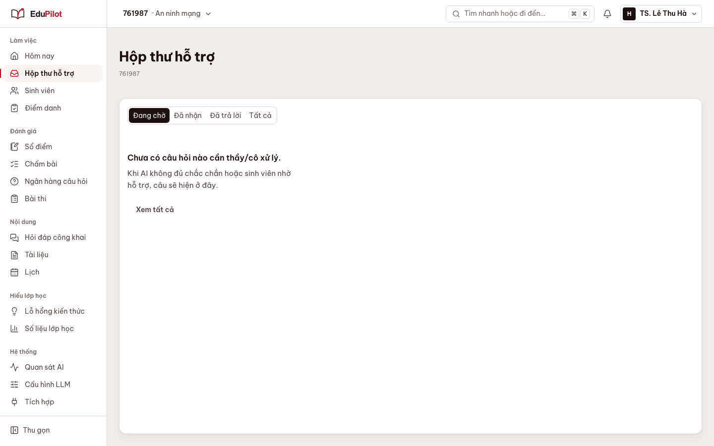
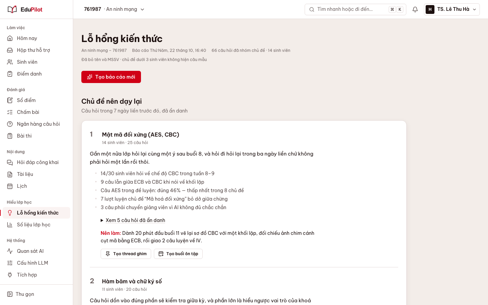
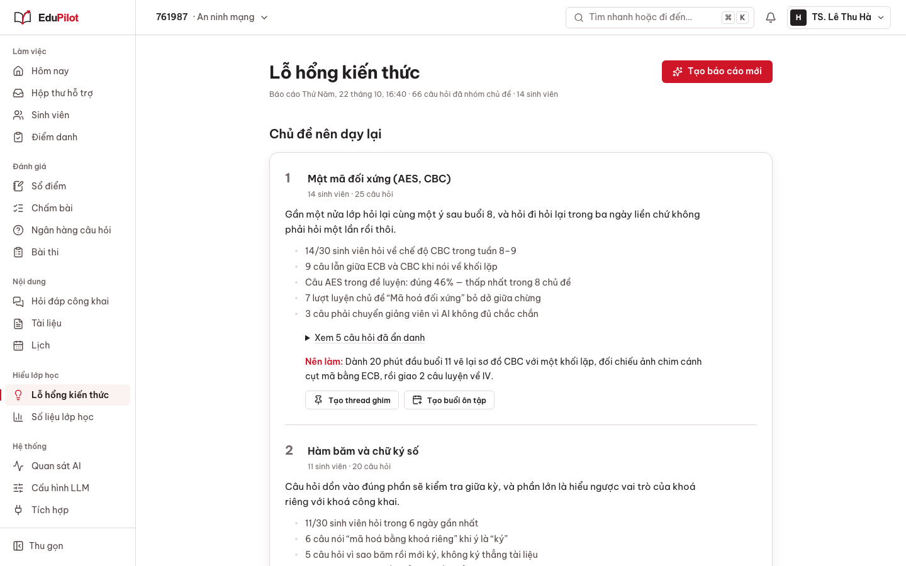
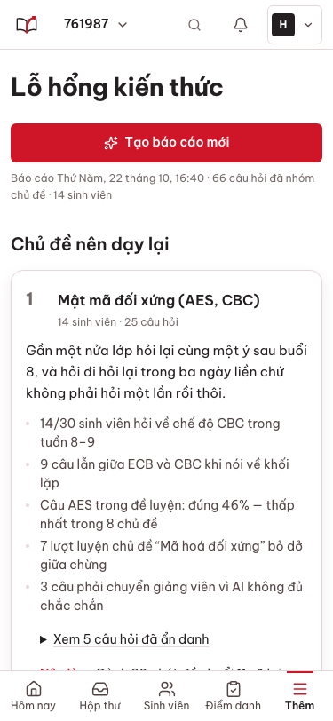
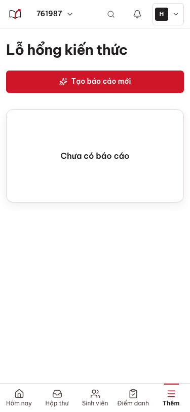
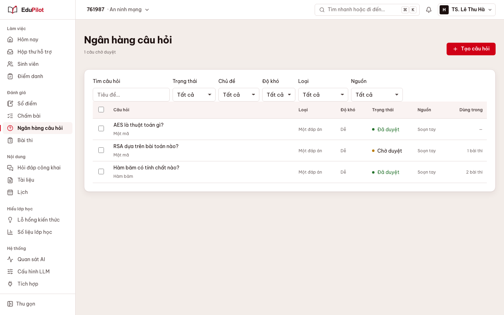
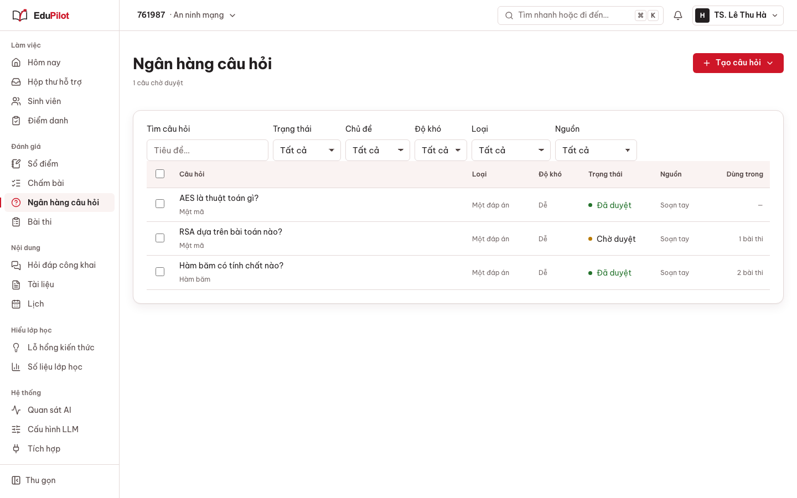
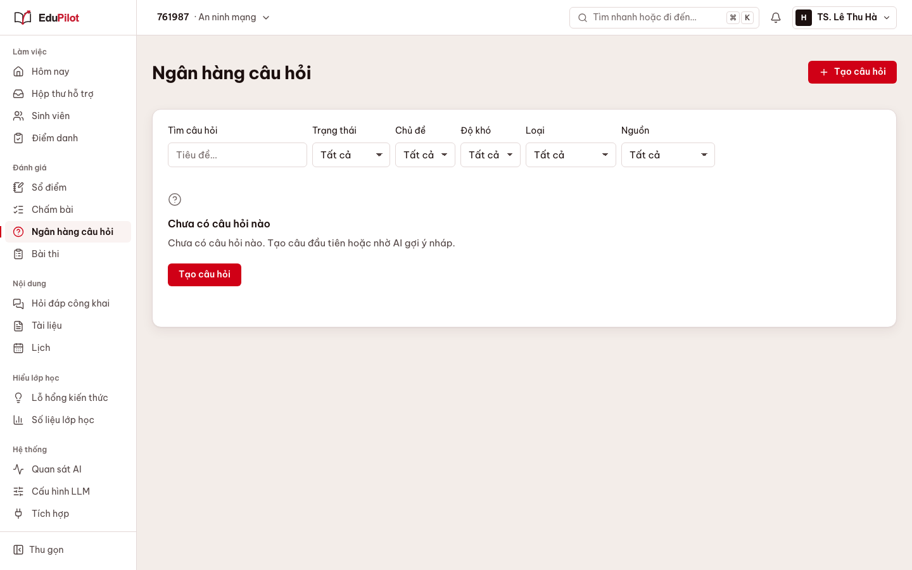
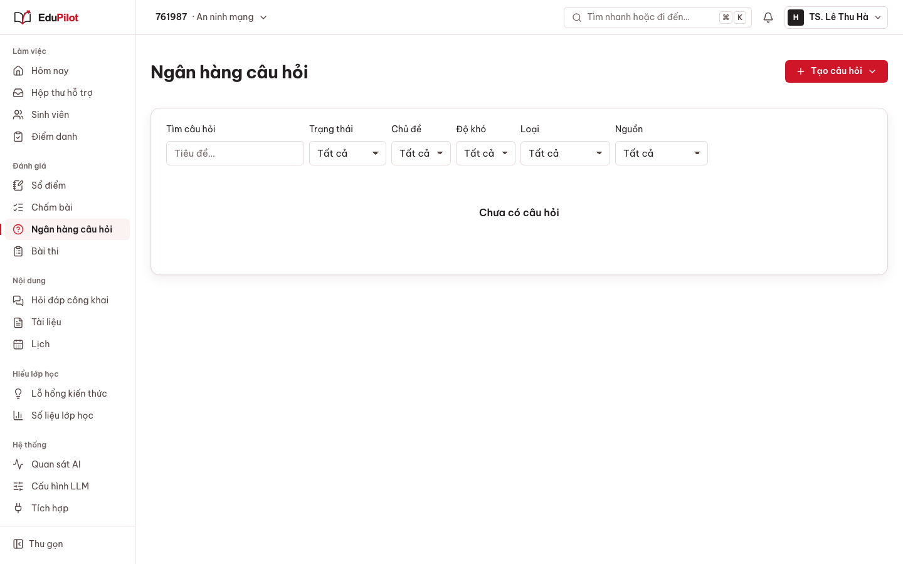

Sprint 10.7 lô 1 — trước / sau (giảng viên, lớp 761987; ảnh chụp bằng Playwright, dữ liệu mô phỏng)
inbox-1440-data
Trước (main @ 10.6)Sau (sprint/10.7-ui-r)
inbox-1440-empty

Trước (main @ 10.6)Sau (sprint/10.7-ui-r)inbox-375-data
Trước (main @ 10.6)Sau (sprint/10.7-ui-r)
inbox-375-empty
Trước (main @ 10.6)Sau (sprint/10.7-ui-r)
insights-1440-data

Trước (main @ 10.6)
Sau (sprint/10.7-ui-r)insights-1440-empty
Trước (main @ 10.6)Sau (sprint/10.7-ui-r)
insights-375-data
Trước (main @ 10.6)
Sau (sprint/10.7-ui-r) insights-375-empty
Trước (main @ 10.6)
Sau (sprint/10.7-ui-r) questions-1440-data

Trước (main @ 10.6)
Sau (sprint/10.7-ui-r)questions-1440-empty

Trước (main @ 10.6)
Sau (sprint/10.7-ui-r)questions-375-data
Trước (main @ 10.6)Sau (sprint/10.7-ui-r)
questions-375-empty
Trước (main @ 10.6)Sau (sprint/10.7-ui-r)